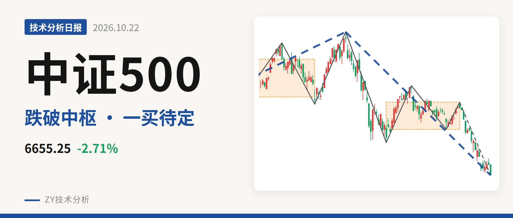
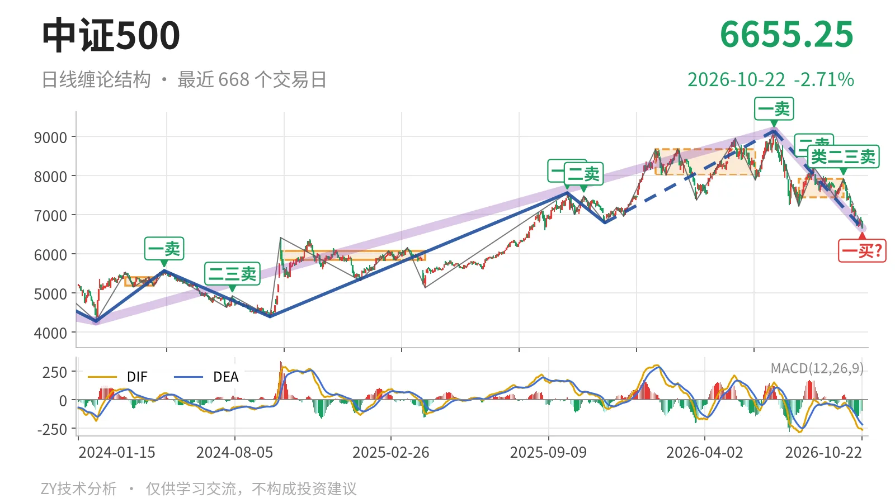
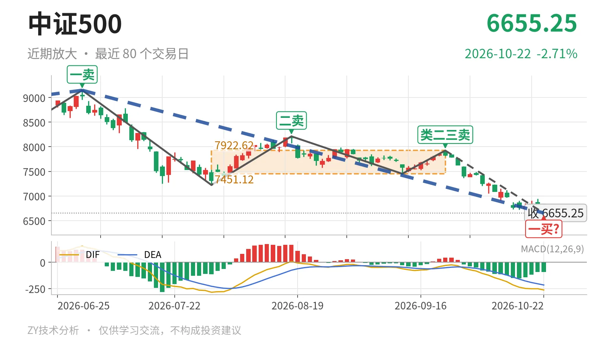

中证500｜暂定一买6652点，跌破7451中枢

最近日线中枢 7451.12—7922.62点，收盘位于中枢之下
一句话：跌破最近中枢，下跌力度减弱但一笔未走完，暂定一买待观察
📉 走势结构：更大级别上涨段回撤，日线下跌段未收束
当前更大级别仍处于2024年2月5日以来上涨段的回撤段，7月1日开始的下跌段还在延续。日线线段上，7月1日9147.56点至10月22日6652.78点的下跌线段没有结束，其中已经留下5笔；2025年11月24日至2026年7月1日的上涨线段仍在更大上涨框架内，不能因为这一轮回落就判定反转。因此日线结构不是简单箱体震荡，而是上涨后的回落段未完成。

🧭 中枢位置：跌破最近中枢下沿，价格回到更低区间
7月30日至9月22日形成的日线笔中枢，区间为7451.12—7922.62点，中轴7686.87点；最新收盘6655.25点已经在该中枢下方，低于下沿约10.7%。与1月26日至6月8日8014.66—8671.35点中枢相比，中枢明显下移。最近中枢尚未完成，但价格脱出下沿后，反弹不回下沿之前，结构仍以下跌段视角为主。
🎯 买卖点：卖点逐级压低，暂定一买跟随当前笔
7月1日9147.56点的日线笔一卖之后，8月18日8211.31点二卖、9月22日7922.62点类二三卖依次出现，反弹高点一个比一个低。由于10月22日继续创出调整新低，8月18日与9月22日两个卖点更多对应下跌段内部的次级别反抽，7月1日一卖仍是本轮日线级别回落的起点。10月22日最低6652.78点暂成一买，但该一买所在的9月22日以来下跌笔还在延续，位置会随这一笔的后续变化，不能提前定型。

⚠️ 背驰：离开段新低不新弱，但尚未定格
围绕7月30日至9月22日中枢，7月1日至7月30日下跌笔作为进入段，从9147.56点至7221.95点，跌21.1%，绿柱面积2687，DIF低点-285.2；9月22日以来的离开段至10月22日最低6652.78点，跌16.0%，绿柱面积1378，DIF低点-263.4。价格创了新低，但绿柱面积小于进入段，DIF低点也高于前低，属于“新低不新弱”。由于离开段这一笔还在延续，这个对比只能作为背驰条件积累，不能直接定格为已完成背驰。
📍 关键位置观察：反抽不回7451点，构成三卖
上方最近观察位是7月30日至9月22日中枢下沿7451点附近。当前已经跌破该下沿，若后续反抽回不到7451点上方，结构上就构成三卖，下跌段仍有延续；若能重新站上7451点，则回落更可能只是中枢扩展。再向上看7923点附近的9月22日反抽高点，能否收复决定中枢回归力度。下方6652.78点暂定一买若继续被跌破，则在当前下跌笔未收束状态下，一买结构需要重排。综合看，价格在7451点下方、反弹高点逐级压低，弱在7451点未回收；但离开段力度弱于进入段，回落进入结构末端。
⚠️ 本文为基于公开行情数据的缠论技术结构记录，由程序自动计算并生成，仅供学习交流，不构成任何投资建议。市场有风险，投资需谨慎。